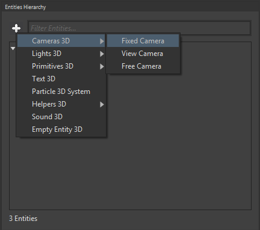
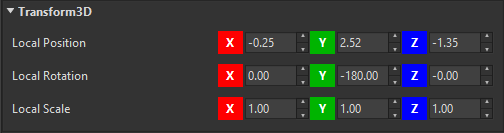
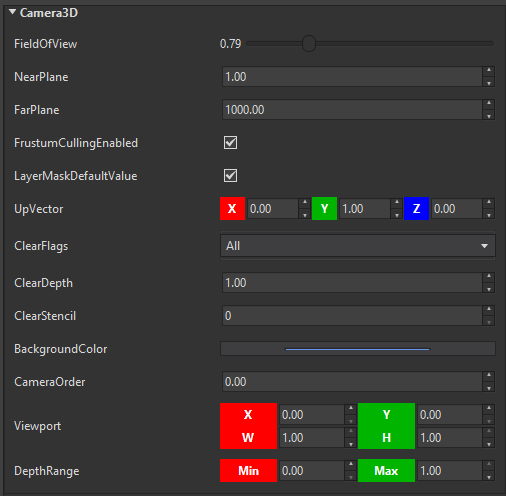
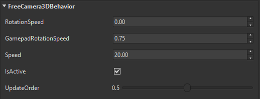
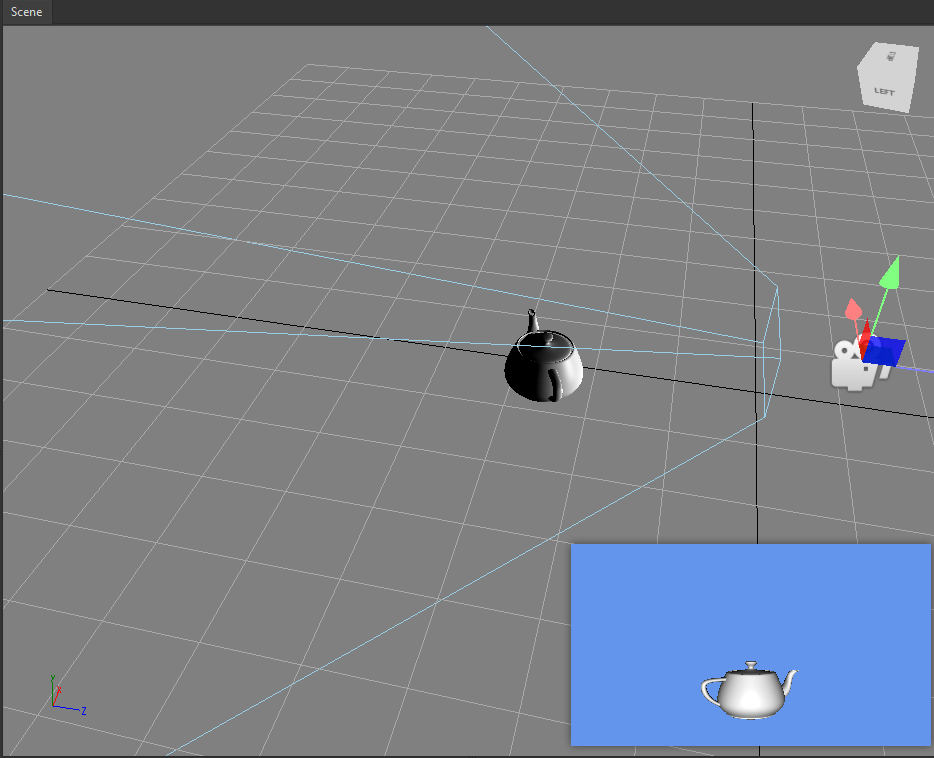

Goal
At least one camera is a must-have on any Wave Engine project. When a game is run, the screen rendered is the result of what such camera is seeing of the world.
Within this recipe you will learn how to add a 3D camera to your game both from Wave Visual Editor or your favorite IDE.
Hands-on
Cameras can be found under WaveEngine.Components.Cameras namespace. The built-in 3D cameras in Wave Engine are:
- FixedCamera3D: This camera does not have any built-in behavior, it is static.
- FreeCamera3D: This camera can be moved using the mouse, touch or keyboard.
- ViewCamera3D: This camera can be moved using the mouse, touch or keyboard while respecting the look-at point.
With Wave Visual Editor
Once you have a project in Wave Visual Editor, you can see the "Add Entity" button in the "Entities Hierarchy" panel at the right side of the screen:

Clicking on an kind of 3d camera it is added to the scene.
Now, in the "Entity Details" panel, you can modify the desired properties of the entity:
  
The result can be viewed in the "Viewport" view when the camera is selected:

With Visual Studio (for Windows or Mac)
In Wave Visual Editor go to File, Open C# Solution... Within the Shared Project, open an existing Scene class. Usually, the camera is added at the beginning of the Scene.CreateScene() method. For example, the following snippet creates a FreeCamera3D and adds it to the EntityManager. An important key is the BackgroundColor property, which allows to choose which Color is used to clear the screen on each draw call.
// Where the camera is placed on the world
var position = new Vector3(0, 0, 2.5f);
// Where the camera is looking at
var lookAt = Vector3.Zero;
var camera = new FreeCamera3D("MainCamera", position, lookAt)
{
BackgroundColor = Color.CornflowerBlue
};
this.EntityManager.Add(camera.Entity);
Note
The reason why it is added camera.Entity to the EntityManager is ViewCamera inherits from BaseDecorator, a built-in mechanism to create and wrap new Entity's on demand.
Appart from position and look-at, there are some other properties which let customize more in depth the cameras behaviour: field of view, aspect ratio, etc. -some of these are covered here (slides 25-26). The whole source code is available here.
Wrap-up
This recipe has listed which cameras can be found within Wave Engine, and how can be easily added to a project.